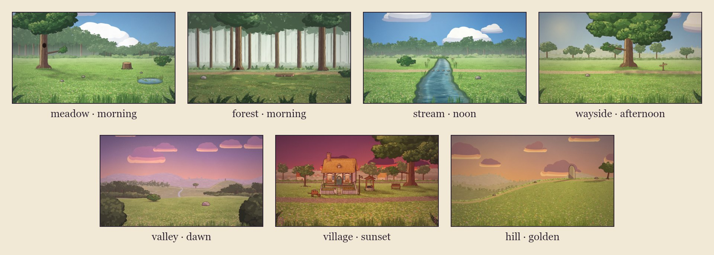
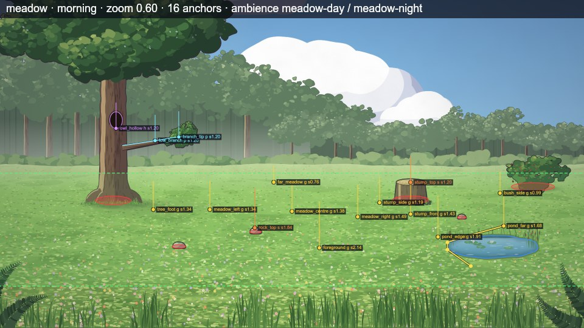
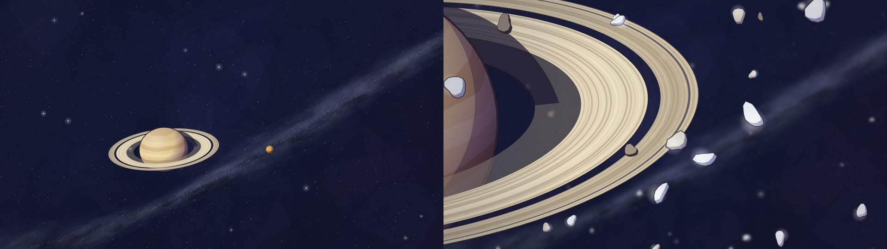

#Sets: kits, anchors and times of day
A kit is a painted location: parallax layers of sky, far land and ground, props that sort in depth with the
actors (a character behind a tree is hidden by it), named anchors where actors stand, a walkable region the
actors route through, water and stepping stones, and the ambience it sounds like. A film names the kits it uses in
sets and each scene picks one:
"sets": { "meadow": { "kit": "meadow" }, "home": { "kit": "village" } },
"scenes": [ { "id": "s01", "set": "meadow", "time": "dawn", … } ]

Everything an actor can touch (ground, stump tops, branches, hollows, stones, water) is defined once, as data, and
both the painting and the staging read that same data, so an actor sent to stump_top stands on the painted stump.
#Seeing a kit
node bin/cinecode.mjs set-sheet meadow,stream # → out/set-sheet.jpg
node bin/cinecode.mjs set-sheet films/my-film # every kit, including the film's own → films/my-film/out/

Each anchor is labelled with its name, the first letter of its type and the actor scale there (s1.38); the tick
above it is a standing hare's height at that spot. Red ellipses are solid footprints, the dashed green line bounds
the walkable region, blue outlines are water, teal ellipses are stepping stones, and a yellow polyline is the kit's
sample route when it has one. The skill's inventory script prints the anchors as Markdown tables, and every prop's
painted extent (its world box, e.g. the hill's hawthorn 2900–3340 × 436–770):
node .claude/skills/cinecode/scripts/inventory.mjs sets. Custom drawing code reads the same boxes from
api.set.props (effects.md).
Two things the sheet doesn't show. A prop's painted extent beyond its footprint: a tree's crown has no anchor, so read its box from the inventory to stage something in it. And the front layer (foreground grass blades, ferns, low branches), which is drawn over the actors with its own parallax: in a low or close shot of a small actor near the bottom of the frame, blades can cross it. Check those shots on a contact sheet and move the actor up the ground, or change the framing.
#Coordinates and scale
Set coordinates are world pixels; y grows downward, so a bigger y is nearer the camera. Actors get bigger toward
the camera: on a flat kit scale = baseS × (y − horizon) / (laneY − horizon), about 1.3 on most kits' main lane
(the scale column in the anchor tables is that number at the anchor). A ridge kit (the hill) has a slope instead of a
flat floor: actors walk a band just below the crest line, so give places as x:… without y.
Places in a storyboard are anchors, x:1500 (that x on the main lane), x:1500,y:1060, or relative to an actor
(near:fox); see storyboard.md. The camera centre is limited to the kit's view, and a frame
never shows past the painted area.
#Anchor types
| type | meaning |
|---|---|
ground |
a spot on the ground. An actor sent here stands on it, or on the nearest walkable spot that is not inside a solid prop or another actor. |
surface |
the top of a prop (a stump, a rock, a bench seat, a stepping stone). Walking there walks to the foot of the prop and jumps up; leaving jumps down first. Fliers fly there. Stepping stones are also hopped across on routes over water. |
perch |
a point on a branch, for rigs that perch (owl, songbird, squirrel, butterfly). Fliers fly there; the squirrel jumps up from the foot of the tree. Others are warned. |
hollow |
an opening in a prop (the owl's hollow, the fox's den), see below. |
view |
a far landmark (the valley's): frame it with the camera's on, or look at it. Not a place to stand. |
An anchor's name is a word of letters, digits, _, . and -, and never one a storyboard reads as something else:
left and right are the sides enter and exit use, x:… a position, near:… and the like a place by an actor.
verify-kit fails such a name. An anchor may also have a depth, z (storyboard.md): an actor
placed or moved there takes it (an anchor without one is on the stage, z 0).
Any anchor can be a camera subject ("on": ["den"]): it is framed as a box of about 120 × 110 world px (× the scale
there), roughly a standing hare, so a small actor framed together with an anchor comes out small.
Hollows. An actor sent into a hollow ("do": "run", "to": "den") runs to the foot of the prop and jumps up into
the opening (a flier flies in); enter with "from": "den" appears in it and walks out. Inside, the actor is drawn
clipped to the opening, in front of a dark hole (by day too): by day the occupant stands out against it, at night it shows
only by the scene's rim light or a glow you draw. The openings are small and fixed: the forest's den is about 60 × 44
world px at the foot of the oak (a mouse, a hedgehog, a frog fit; anything taller is cut by the opening); the meadow's
owl_hollow is about 68 × 92 px, 360 px up the owl tree (for the owl, or another flier). The nearest ground is right
in front of the prop: give it with a y (in front of the den, about x:1490–1550,y:1028); x: alone is the main
lane, further down. A two-shot of someone in a hollow and someone on the ground in front of it works for small rigs
(the den sits about 30 px above that ground); the owl's hollow is too high for one: cut between them.
#Times of day
Every kit under Earth's sky paints all eight skies: dawn, morning, noon, afternoon, golden, sunset,
twilight, night. A scene sets one with time, or a change { "from": "golden", "to": "twilight" } blended over
the middle 80% of the scene; a shot can set its own (a time-lapse). Without time a scene uses the kit's default.
A kit that is somewhere else (space, a cave, under the sea) declares times of its own instead, each with its sky and
its light, and those are then the only times it has: the space kit has one, space (no grade but the vignette, no
sun). A time a kit doesn't have, or a sky a kit paints without saying how it is lit, is a check error, never a
morning in disguise. See adding a kit.
The time of day is a sky and a grade over the whole picture: a soft-light wash, a multiply tint, a vignette and film
grain. Dawn turns the land rose-gold, golden hour warm, twilight lavender; night is moonlit blue with a contrast
stretch so close-ups keep real darks, and at night a close shot's vignette closes in around its subject. The sun
casts every grounded figure's and solid prop's shadow across the ground, short at noon and long at dawn, golden hour
and sunset; there are no cast shadows at twilight and night. Story grades (memory, dream) go on top
(storyboard.md).
#Ambience
With "ambience": "auto" (the default) a scene plays its kit's day bed, or its night bed at twilight and night;
a scene that changes between the two switches beds at its midpoint. The beds are synthesized
(sound.md): meadow-day, meadow-night, forest-day, forest-night, stream,
village-day, village-night, wind-hill.
#The kits
Kits take one param, seed ("params": { "seed": 2 }), which changes the random details of the painting (space
takes three more).
#forest
A dirt path winding left to right between big trunks, misty depths behind; an old oak with a den between its roots, a fallen log, a mossy boulder, dappled light on the floor.
- size: 4400 × 1400 world px; camera centre x 700–3700, y 380–1350; horizon y 720, main lane y ≈ 1066
- default time:
morning; ambience:forest-dayby day,forest-nightat twilight and night - ground: grass, dirt
- solid props (actors route around them; lint flags standing inside one):
oak,elm,log,boulder,brambles
| anchor | type | x | y | scale |
|---|---|---|---|---|
path_west |
ground | 700 | 1066 | 1.32 |
path_mid |
ground | 2100 | 1066 | 1.31 |
path_east |
ground | 3500 | 1057 | 1.28 |
oak_front |
ground | 1560 | 1090 | 1.41 |
log_front |
ground | 2420 | 1185 | 1.77 |
clearing |
ground | 1900 | 1190 | 1.79 |
fern_corner |
ground | 3300 | 1230 | 1.94 |
boulder_side |
ground | 980 | 1160 | 1.67 |
den |
hollow (on oak) |
1488 | 995 | 1.08 |
log_top |
surface (on log) |
2400 | 1074 | 1.53 |
boulder_top |
surface (on boulder) |
812 | 1112 | 1.71 |
#hill
A long grassy slope rising left to right to a crest with an old standing stone, a hawthorn beyond it, hazy ranges behind. At night the hill re-lights itself for the moon: the slope sinks into cool shadow, the crest keeps a moonlit rim (its tussocks shaded whole), the far ranges drop back with the trees on their crests, and the standing stone is the brightest shape on the land.
- size: 3300 × 1500 world px; camera centre x 800–2900, y 350–1250; a ridge set: the ground follows the slope, so give
x:only - default time:
golden; ambience:wind-hillby day,meadow-nightat twilight and night - ground: grass, dirt
- solid props (actors route around them; lint flags standing inside one):
standing_stone,rock_low,rock_mid,rock_high,hawthorn - the hawthorn's crown (no anchor): about x 2990–3330, y 440–650 (centre 3160, 545). The ground under its middle
is at y 757, scale 1.3, so a flier hovering there needs
"to": "x:3160", "height": 160(height = (ground y − y) ÷ scale): that is how a kite or a bird gets stuck in it
| anchor | type | x | y | scale |
|---|---|---|---|---|
hill_foot |
ground | 250 | 1227 | 1.40 |
slope_low |
ground | 800 | 1143 | 1.40 |
slope_mid |
ground | 1400 | 938 | 1.40 |
slope_high |
ground | 1900 | 818 | 1.40 |
crest |
ground | 2200 | 797 | 1.40 |
stone_front |
ground | 2420 | 807 | 1.45 |
stone_left |
ground | 2290 | 789 | 1.38 |
stone_right |
ground | 2560 | 781 | 1.38 |
beyond |
ground | 2860 | 792 | 1.43 |
thorn_shade |
ground | 3060 | 784 | 1.40 |
stone_top |
surface (on standing_stone) |
2426 | 501 | 1.32 |
#meadow
The meadow at the forest edge: an owl's hollow tree with a low branch on the left, an old stump on the right, a small lily pond in the right foreground, the forest wall behind opening onto far hills.
- size: 2800 × 1500 world px; camera centre x 500–2300, y 300–1400; horizon y 700, main lane y ≈ 1036
- default time:
morning; ambience:meadow-dayby day,meadow-nightat twilight and night - ground: grass; water (1 area)
- solid props (actors route around them; lint flags standing inside one):
owl_tree,stump,rock_a,rock_b,rock_c,bush
| anchor | type | x | y | scale |
|---|---|---|---|---|
tree_foot |
ground | 640 | 1050 | 1.34 |
stump_front |
ground | 2050 | 1075 | 1.43 |
stump_side |
ground | 1880 | 1012 | 1.19 |
meadow_centre |
ground | 1400 | 1060 | 1.38 |
meadow_left |
ground | 950 | 1050 | 1.34 |
meadow_right |
ground | 1760 | 1090 | 1.49 |
far_meadow |
ground | 1300 | 900 | 0.76 |
foreground |
ground | 1550 | 1260 | 2.14 |
pond_edge |
ground | 2200 | 1200 | 1.91 |
pond_far |
ground | 2560 | 1140 | 1.68 |
bush_side |
ground | 2540 | 960 | 0.99 |
rock_top |
surface (on rock_a) |
1196 | 1150 | 1.84 |
owl_hollow |
hollow (on owl_tree) |
436 | 604 | 1.20 |
low_branch |
perch (on owl_tree) |
650 | 672 | 1.20 |
branch_tip |
perch (on owl_tree) |
780 | 652 | 1.20 |
stump_top |
surface (on stump) |
2050 | 901 | 1.20 |
#space
Deep space: a starfield with the Milky Way and faint nebula washes on a deep navy (not black), and no ground. Planets,
moons and the Sun are actors (the planet rig) held at its perch anchors on an invisible stage, so
the camera frames, pushes in on and lints them like characters. The backdrop is drawn in screen space and barely moves
when the camera zooms, so a push-in on a planet reads as travelling toward it while the stars stay put.

- size: 3200 × 1800 world px; camera centre x −200–3400, y 0–1800; an invisible stage plane: far anchors (y 600) a little smaller, near ones (y 1400) a little bigger
- time: its own,
space(the only one: no grade but the house vignette, no sun); no ground to shade, so nothing throws a shadow at all (groundShadows: false). ambience: scenes there use"ambience": "none" - params:
seed(another starfield),milkyandnebula(0..1, default 1),tint(violet,blue,teal) - depth: with no painted ground, any actor may be off the stage: a scene actor's
"z"of 2400 is about half size behind everything on the stage, −900 about 1.6× in front (storyboard.md)
| anchor | type | x | y | scale |
|---|---|---|---|---|
centre, west, east |
perch | 1600, 900, 2300 | 1000 | 1.00 |
far, far_west, far_east |
perch | 1600, 800, 2400 | 600 | 0.90 |
near, near_west, near_east |
perch | 1600, 900, 2300 | 1400 | 1.10 |
ground_<each of the above> |
ground | the same x | 60 px below | 0.92–1.11 |
The ground_* anchors are walkable stage under each hold, for a walker or a hidden stand-in.
#stream
A brook winding from the far meadow toward the viewer, cutting a path in two. Four stepping stones cross it (a stride apart for a hare, too far for a tortoise: routes hop across them), a frog's rock sits mid-stream, reeds and sedge line the banks. The water moves every frame.
- size: 2800 × 1400 world px; camera centre x 700–2100, y 420–1350; horizon y 700, main lane y ≈ 1045
- default time:
morning; ambience:streamby day,streamat twilight and night - ground: grass, dirt; water (1 area); stepping stones
stone_1,stone_2,stone_3,stone_4,frog_rock - solid props (actors route around them; lint flags standing inside one):
bank_rock,willow_bush
| anchor | type | x | y | scale |
|---|---|---|---|---|
bank_left |
ground | 1000 | 1052 | 1.31 |
bank_right |
ground | 1660 | 1054 | 1.31 |
path_west |
ground | 500 | 1055 | 1.32 |
path_east |
ground | 2300 | 1055 | 1.32 |
near_left |
ground | 860 | 1230 | 1.97 |
near_right |
ground | 1880 | 1250 | 2.04 |
far_bank |
ground | 1640 | 900 | 0.74 |
stone_1 |
surface (on stone_1) |
1170 | 1043 | 1.27 |
stone_2 |
surface (on stone_2) |
1270 | 1046 | 1.29 |
stone_3 |
surface (on stone_3) |
1370 | 1043 | 1.27 |
stone_4 |
surface (on stone_4) |
1470 | 1046 | 1.29 |
frog_rock |
surface (on frog_rock) |
1430 | 1116 | 1.55 |
#valley
A lookout knoll above a wide valley: the forest's edge on the left, a stream winding down through the meadows, the path, the wayside tree and the hill with its standing stone far off on the right. For openings, journeys seen from afar and night skies. Its view anchors are those far landmarks.
- size: 2800 × 1400 world px; camera centre x 1000–1800, y 450–1150; horizon y 600, main lane y ≈ 1072
- default time:
dawn; ambience:meadow-dayby day,meadow-nightat twilight and night - ground: grass
- solid props (actors route around them; lint flags standing inside one):
lookout_rock,gorse
| anchor | type | x | y | scale |
|---|---|---|---|---|
lookout |
ground | 1400 | 1200 | 1.00 |
knoll_left |
ground | 1060 | 1190 | 0.98 |
knoll_right |
ground | 2080 | 1250 | 1.08 |
path_down |
ground | 1440 | 1330 | 1.22 |
near |
ground | 1250 | 1360 | 1.27 |
view_forest |
view | 500 | 860 | 0.43 |
view_stream |
view | 1380 | 960 | 0.60 |
view_tree |
view | 1680 | 858 | 0.43 |
view_stone |
view | 2260 | 733 | 0.22 |
lookout_rock |
surface (on lookout_rock) |
1866 | 1170 | 1.07 |
#village
A timber-and-plaster cottage under a thatched roof, a cottage garden behind a white picket fence with an open gate, a flagstone path to the door, a stone well, a bench under an old tree with a low branch, a lantern post by the gate and a cobbled lane; beyond a dry-stone wall, neighbours' cottages and a far village with a church spire. At dusk the windows and the lantern light up.
- size: 2800 × 1500 world px; camera centre x 600–2300, y 300–1350; horizon y 660, main lane y ≈ 1179
- default time:
morning; ambience:village-dayby day,village-nightat twilight and night - ground: grass, stone, gravel
- solid props (actors route around them; lint flags standing inside one):
cottage,bed_left,bed_right,fence_left,gate_post_l,gate_post_r,fence_right,fence_side_l1,fence_side_l2,fence_side_r1,fence_side_r2,well,bench,lantern,tree,apple_tree,wheelbarrow
| anchor | type | x | y | scale |
|---|---|---|---|---|
door_front |
ground | 1050 | 904 | 0.76 |
gate |
ground | 1050 | 1098 | 1.36 |
garden_path |
ground | 1050 | 990 | 1.02 |
window_left |
ground | 862 | 904 | 0.76 |
window_right |
ground | 1210 | 904 | 0.76 |
lantern_foot |
ground | 1510 | 1094 | 1.34 |
well_side |
ground | 1522 | 1000 | 1.05 |
well_front |
ground | 1650 | 1050 | 1.21 |
bench_front |
ground | 2160 | 1008 | 1.08 |
tree_foot |
ground | 2310 | 950 | 0.90 |
lane_west |
ground | 300 | 1174 | 1.59 |
lane_mid |
ground | 1400 | 1179 | 1.61 |
lane_east |
ground | 2500 | 1152 | 1.52 |
orchard |
ground | 560 | 940 | 0.87 |
meadow_back |
ground | 1900 | 880 | 0.68 |
foreground |
ground | 1500 | 1300 | 1.98 |
chimney_top |
surface (on cottage) |
841 | 248 | 0.68 |
roof_ridge |
surface (on cottage) |
1143 | 356 | 0.68 |
well_rim |
surface (on well) |
1628 | 943 | 1.05 |
bench_seat |
surface (on bench) |
2160 | 909 | 0.93 |
bench_left |
surface (on bench) |
2110 | 909 | 0.93 |
bench_right |
surface (on bench) |
2210 | 909 | 0.93 |
low_branch |
perch (on tree) |
2254 | 610 | 0.76 |
branch_tip |
perch (on tree) |
2109 | 607 | 0.76 |
#wayside
A great old tree beside the path, a long low branch reaching left over a shady nap spot among its roots, a signpost at the fork, open meadow and soft hills beyond.
- size: 2800 × 1500 world px; camera centre x 700–2200, y 350–1350; horizon y 720, main lane y ≈ 1075
- default time:
morning; ambience:meadow-dayby day,meadow-nightat twilight and night - ground: grass, dirt
- solid props (actors route around them; lint flags standing inside one):
way_tree,signpost,mile_stone
| anchor | type | x | y | scale |
|---|---|---|---|---|
nap |
ground | 1390 | 1014 | 1.06 |
tree_shade |
ground | 1200 | 1030 | 1.12 |
roots_front |
ground | 1600 | 1040 | 1.16 |
path_west |
ground | 500 | 1086 | 1.32 |
path_mid |
ground | 1400 | 1075 | 1.28 |
path_east |
ground | 2400 | 1084 | 1.32 |
sign |
ground | 2160 | 1095 | 1.35 |
meadow_near |
ground | 1300 | 1240 | 1.88 |
far_field |
ground | 2000 | 930 | 0.76 |
way_branch |
perch (on way_tree) |
1310 | 600 | 0.96 |
branch_end |
perch (on way_tree) |
1128 | 597 | 0.96 |
branch_base |
perch (on way_tree) |
1447 | 622 | 0.96 |
#Adding a kit
A film can bring its own locations: one file per kit, films/<slug>/kits/<name>.mjs, that default-exports
(params) => set (for every film of a project, cinecode/kits/<name>.mjs at the project root; custom.mjs may also
export kits as { name: (params) => set }). Use the name as a set's kit. makeSet from cinecode/set builds the
set from a description. This example is a complete, working kit that passes the gate, cinecode verify-kit films/<slug>/kits/glade.mjs: a meadow glade with far hills and one boulder you can stand on (the build-kit skill's
starter is a fuller one, painted with the house helpers).
// films/<slug>/kits/glade.mjs: the kit takes its name from the file
import { makeSet } from 'cinecode/set';
const ground = x => 1000 + 12 * Math.sin(x / 300); // the lane where actors stand by default (y at x)
export default () => makeSet({
id: 'glade', W: 2400, H: 1400, refX: 1200, refY: 800,
area: { x0: -300, x1: 2900, y0: -300, y1: 1600 }, // the painted world: at least 3200 × 1800
view: { x0: 700, x1: 1700, y0: 350, y1: 1200 }, // where the camera centre may go
horizon: 700, laneY: 1000, baseS: 1.3, lane: ground, // scale = baseS × (y − horizon) / (laneY − horizon)
layers: [
{ k: 0.5, paint(x, r, S, E) { // far hills: parallax 0.5
x.fillStyle = '#9fb8a6'; x.beginPath(); x.moveTo(E.x0, 760);
for (let px = E.x0; px <= E.x1; px += 40) x.lineTo(px, 690 - 40 * Math.sin(px / 260));
x.lineTo(E.x1, 760); x.lineTo(E.x1, E.y1); x.lineTo(E.x0, E.y1); x.closePath(); x.fill();
} },
{ k: 1, paint(x, r, S, E) { // the ground the actors stand on
x.fillStyle = '#7da35a'; x.fillRect(E.x0, 720, E.x1 - E.x0, E.y1 - 720);
for (let i = 0; i < 900; i++) { x.fillStyle = r() < 0.5 ? '#6f9550' : '#8db068'; x.fillRect(E.x0 + r() * (E.x1 - E.x0), 730 + r() * 900, 14, 4); }
} },
],
props: [{
id: 'boulder', x: 1500, y: 1030, solid: { rx: 70, ry: 20 }, bounds: [1420, 950, 1580, 1040],
paint(x) { x.fillStyle = '#8a8478'; x.beginPath(); x.ellipse(1500, 1030, 80, 70, 0, Math.PI, 0); x.fill(); },
anchors: { boulder_top: { x: 1500, y: 962, type: 'surface' } },
}],
anchors: {
west: { x: 900, y: 1000 }, east: { x: 1750, y: 1010 },
centre: { x: 1200, y: 1020 }, front: { x: 1250, y: 1180 },
},
ambience: { day: 'meadow-day', night: 'meadow-night' },
});
"sets": { "glade": { "kit": "glade" } }
The description:
| field | meaning |
|---|---|
id, W, H |
the kit's name and its nominal size in world pixels |
area |
the painted world { x0, x1, y0, y1 } (default 0..W, 0..H). A frame never shows past it: the camera zooms in instead (the widest view any camera shows is 3200 × 1800 world px). |
view |
where the camera centre may go |
refX, refY |
the reference camera centre: parallax offsets are measured from it |
horizon, laneY, baseS, lane(x) |
perspective: the actor scale is baseS on the lane y and 0 at the horizon. lane(x) gives the main lane's y at x (default laneY). scaleAt(x, y) may replace the formula. |
layers |
[{ k, paint(ctx, rnd, S, E), front, outline, anim, shade }]. k is the parallax factor (0.5 = far, 1 = the ground, > 1 or front: true = drawn in front of the actors). paint draws once in world coordinates inside the extent E ({ x0, x1, y0, y1 }) with the seeded random rnd(); the result is cached. outline: { w, color, alpha } inks the layer's silhouette. anim(ctx, t) draws moving parts every frame (water shimmer). shade(S) → { rgb, a } or null shades the layer's own paint: it is multiplied by rgb (0..255 each) and crossfaded in by a (before haze), so it never darkens what lies behind the layer and blurred edges take it too (the hill shades its far ranges by night this way). |
props |
[{ id, x, y, solid: { rx, ry }, bounds: [x0, y0, x1, y1], paint(ctx, rnd, S), anchors, top }]: things that sort in depth with the actors by y. solid is the footprint ellipse actors route around. bounds is a hint of where it paints. anchors on a prop belong to it (a surface on its top). |
anchors |
{ name: { x, y, type, depth, face, clip, branch, at, s, surface, z } } (names: see anchor types); type defaults to ground, y to the lane, z (its depth off the stage) to 0. For a perch, branch: { pts, w0, w1 } and at (0..1 along it). For a hollow, clip is the opening's polygon. face is the facing an actor placed there takes; s overrides the scale there; surface the footstep sound. |
walk |
{ region, ground, band, water, stones, paths }: region the walkable polygon (default: the whole area); ground(x) and band make a ridge set; water a list of polygons; stones prop ids whose top ellipse ({ x, y, rx, ry }) can be stood on in water; paths [{ poly, surface }]: ground with its own footstep sound (surface defaults to dirt). |
surface |
the footstep surface everywhere else (default grass) |
sampleRoute |
[from, to], anchor names or [x, y] points: a route drawn on the set sheet |
light |
the light direction for ink and shading (default from the upper left) |
defaultSky |
the time of day when a scene gives none (default morning, or the first of the kit's own times) |
skies |
{ name: (ctx, rnd, w, h) => … }: a sky painter for a time (screen space, w × h, drawn to cover the frame); one of Earth's eight names replaces that sky's painting |
times |
a kit not under Earth's sky: { name: { grade, sun, haze } }, each with a painter in skies; they are then all the times the kit has, and the first is its default. grade: 'neutral' (default: the picture as painted, under the house vignette), one of Earth's eight (its grade), or { sl: [r, g, b, a], mul: [r, g, b], vig, con }; sun: null (default: no sun, no cast shadows), one of Earth's eight, or { len, a }; haze: [r, g, b] that far layers fade toward (default none). { night: {} } among them keeps Earth's night as it is. A time's name means one light in a film: two kits may declare the same name only with the same light. |
groundShadows |
false: no ground to shade (space), so no figure, flier or prop throws a shadow and no figure draws its contact shadow |
lens |
world px from a camera at depth 0 to the stage (default 2304: about a 45° view across a 1920-px frame at zoom 1); it sets how depth scales things (storyboard.md), and camera z / zTo must stay under 3/4 of it |
ambience |
{ day, night } bed names for "ambience": "auto" |
Paint in the house style with the helpers in engine/paint/ (nature.mjs: trees, foliage, grass; scenery.mjs:
ridges, meadow floors, tree lines; water.mjs; structures.mjs: cottages, fences, walls; atmos.mjs: paper
texture, haze, mist; brush.mjs: gouache dabs and ink) and look at engine/set/kits/meadow.mjs for a full kit. Use
the random function you are given, never Math.random(), so every render paints the same picture. Check a new kit
with its gate, node bin/cinecode.mjs verify-kit films/<slug>/kits/<name>.mjs: at least 4 anchors with usable names
and sane scales on walkable ground, every route between them clear, the area and parallax covering every camera, and
every time of day (Earth's eight, or the kit's own) with a light and painted: at least 90% of a preview frame under
each time's grade must be more than near-black, so a night sky or space is a deep blue, not black. It writes two
review images to out/verify/ beside the folder that holds the kit: films/<slug>/out/verify/ for a film's kit,
cinecode/out/verify/ for a project's (the gate prints the paths). Then
node bin/cinecode.mjs set-sheet films/<slug> <name>: anchors, solid footprints, the walk region and water are
drawn over it. A kit for every film belongs in engine/set/kits/<name>.mjs (registered automatically under its file
name) with a test in test/sets.test.mjs.